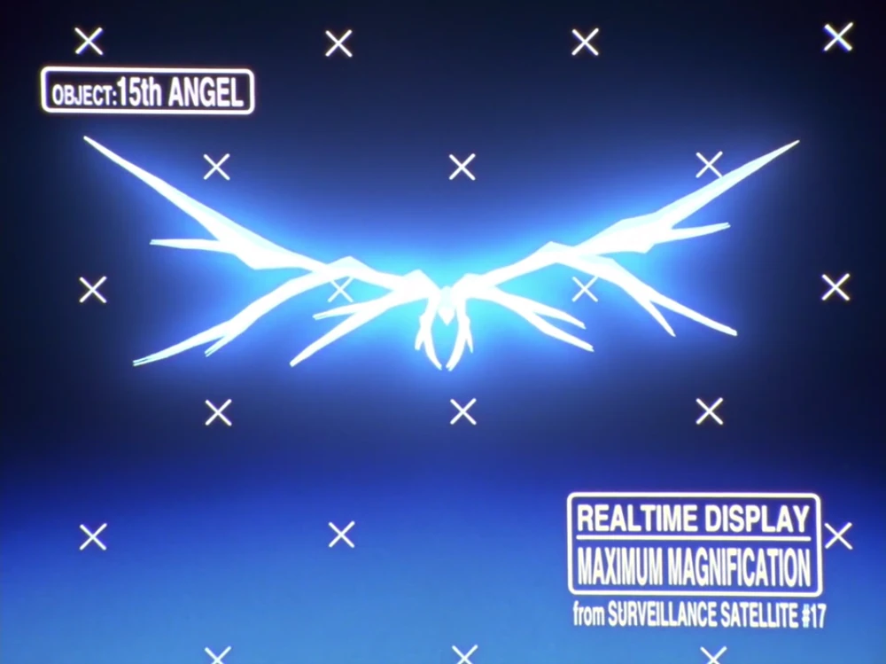

Arael
Deuxième Ange à apparaître dans l'orbite terrestre, il ne descend jamais sur Terre et attaque psychologiquement l'Unité-02 depuis le ciel. Gendō Ikari ordonne d'utiliser la Lance de Longin pour le vaincre, en opposition aux décisions de la SEELE.